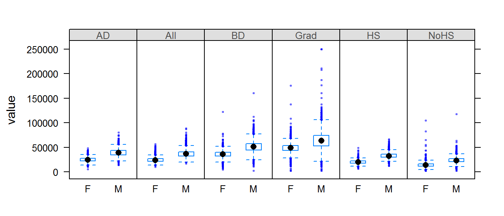
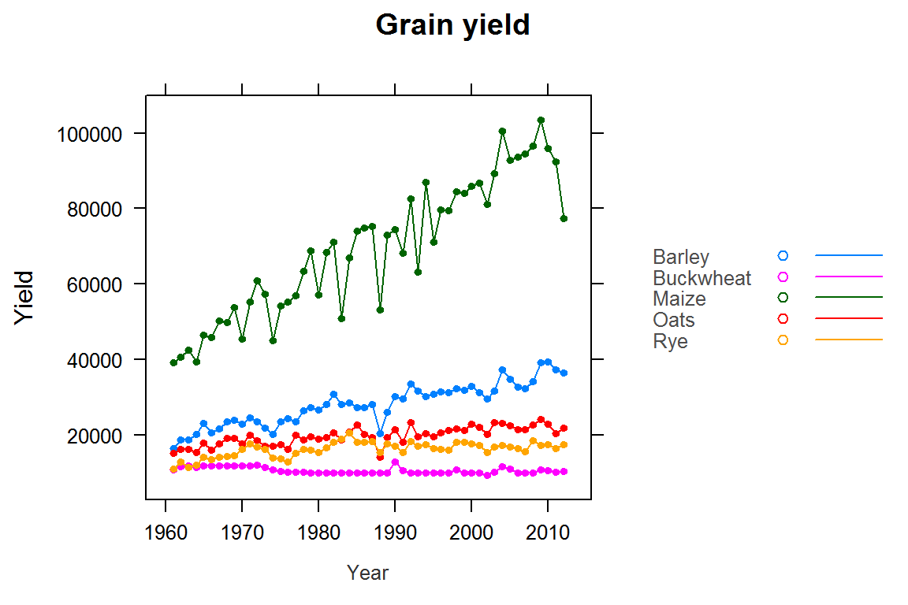
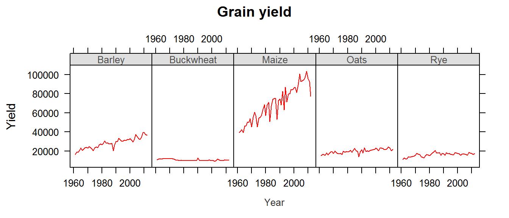
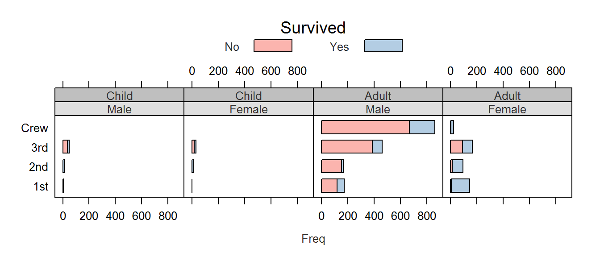

Week4: Lattice plotting environment
This tutorial makes use of the following R package(s): dplyr, tidyr, lattice
Data
dat1 <- read.csv("http://mgimond.github.io/ES218/Data/FAO_grains_NA.csv", header=TRUE)
dat2 <- read.csv("http://mgimond.github.io/ES218/Data/Income_education.csv", header=TRUE)Dataset dat1
dat1 consists of grain yields by north american countries and by year. The data set was downloaded from http://faostat3.fao.org/ in June of 2014.
A subset of dat1 will be used in this tutorial in both a wide form and a long form. The wide form will be called dat1w and will be a table of year vs. crop yields.
library(dplyr)
library(tidyr)
dat1w <- dat1 %>%
filter(Information == "Yield (Hg/Ha)",
Country =="United States of America",
Crop %in% c("Oats", "Maize", "Barley", "Buckwheat","Rye")) %>%
select(Year, Crop, Value) %>%
spread(key = Crop, value="Value")
head(dat1w) Year Barley Buckwheat Maize Oats Rye
1 1961 16488.52 10886.67 39183.63 15171.26 11121.79
2 1962 18839.00 11737.50 40620.80 16224.60 12892.77
3 1963 18808.27 11995.00 42595.55 16253.04 11524.11
4 1964 20208.88 11566.50 39498.36 15471.55 12026.24
5 1965 23070.58 11875.00 46492.14 18001.04 14192.91
6 1966 20581.66 11956.52 45891.88 16117.92 13670.75The long form version of the subset will be called dat1l and will be a long form representation of dat1w (yield by crop and year).
dat1l <- gather(dat1w, key = "Crop", value = "Yield", 2:6)
head(dat1l,10) Year Crop Yield
1 1961 Barley 16488.52
2 1962 Barley 18839.00
3 1963 Barley 18808.27
4 1964 Barley 20208.88
5 1965 Barley 23070.58
6 1966 Barley 20581.66
7 1967 Barley 21785.30
8 1968 Barley 23557.07
9 1969 Barley 24039.46
10 1970 Barley 23048.77Dataset dat2
dat2 consists of county income and educational attainment for both the male and female population. A codebook, available here, provides descriptions for the different codes. We will remove the cases (rows) from dat2 for which values are missing (i.e. cases having a NA designation) since these rows will serve no purpose (such cases may be associated with counties having no year-round residents or a resident population too small for data dissemination).
dat2 <- na.omit(dat2)As with dat1, we will create long forms of dat2 for use with lattice plotting routines.
The dat2 dataset has income data broken down by educational attainment and gender. It would therefore be convenient for subsequent plot operations if two variables, Gender and (educational) Level, were added to the long table version of dat2.
We will first generate five educational category vectors whose values are the census data variable names (see the codebook for census variable name descriptions). These category vectors will then be used in the chain operation’s ifelse functions. We then generate two category vectors for male and female groups–note the use of the paste() function in lieu of the combine function c() (which could have been used as well). Also note that dat2 has income values for all sexes and all educational attainments. We did not create categories for this since they present the “else” option in the ifelse function. In other words, if a variable such as B20004001 is not in any of the educational category vectors (e.g. NoHS, HS, etc…), then its Level value will be "All". Likewise, if the variable is not in either Male or Female vectors, then the value "All" will be assigned to Gender.
# Create list of variable names associated with each level
# of educational attainment
NoHS <- c("B20004002", "B20004008", "B20004014") # Less than High School
HS <- c("B20004003", "B20004009", "B20004015") # High School
AD <- c("B20004004", "B20004010", "B20004016") # Some college or associates degree
BD <- c("B20004005", "B20004011", "B20004017") # Bachelor's degree
Grad <- c("B20004006", "B20004012", "B20004018") # Graduate or professional degree
# Create list of variable names associated with each gender
Male <- paste("B200040", sprintf("%02i", 7:12), sep = "")
Female <- paste("B200040", sprintf("%02i", 13:18), sep = "")
# Create a long form of the data, and add
# descriptive columns for level attained and gender
dat2b <- dat2 %>%
gather(key = "variable", value = "value", -1:-2) %>%
mutate(Level = ifelse(variable %in% NoHS, "NoHS",
ifelse(variable %in% HS, "HS",
ifelse(variable %in% AD, "AD",
ifelse(variable %in% BD, "BD",
ifelse(variable %in% Grad, "Grad", "All")))))) %>%
mutate(Gender = ifelse(variable %in% Male, "M",
ifelse(variable %in% Female, "F", "All"))) %>%
select(State, County, Level, Gender, value)
head(dat2b) State County Level Gender value
1 al Autauga All All 35881
2 al Baldwin All All 31439
3 al Barbour All All 25201
4 al Bibb All All 29016
5 al Blount All All 32035
6 al Bullock All All 26408tail(dat2b) State County Level Gender value
55201 wy Sublette Grad F 59683
55202 wy Sweetwater Grad F 63681
55203 wy Teton Grad F 48357
55204 wy Uinta Grad F 52321
55205 wy Washakie Grad F 50341
55206 wy Weston Grad F 56765Note that we have eliminated references to variable names such as “B20004001” from dat2b making it easier to interpret the variable names/values.
In dat2b the genders are lumped under a single Gender variable. We may wish to have male and female incomes assigned their own columns so we will need to widen dat2b so that each gender value is given its own column. We will use the spread function from the tidyr package to create a new data frame called dat2.gender.
dat2c <- spread(dat2b, key = Gender, value = value )We will also take this opportunity to add a new field to dat2c called Region which will associated each state with a region. R has a built-in vector called state.region that assigns a region to each state.
state.region [1] South West West South West West Northeast South
[9] South South West West North Central North Central North Central North Central
[17] South South Northeast South Northeast North Central North Central South
[25] North Central West North Central West Northeast Northeast West Northeast
[33] South North Central North Central South West Northeast Northeast South
[41] North Central South South West Northeast South West South
[49] North Central West
Levels: Northeast South North Central WestHowever, you’ll note that this vector only has region names but makes no reference to states. It’s intended to be used with another built-in data vector called state.abb or state.name. We will combine state.abb with state.region to create a data frame “lookup table”. We will also need to convert the uppercase state abbreviations to lower case using tolower so that they match the dat2b’s lowercase state abbreviations.
st.reg <- data.frame(State = tolower(state.abb), Region = state.region)Our income dataset has data for all 50 states as well as the District of Columbia (D.C.) as shown in the following output:
unique(dat2c$State) [1] ak al ar az ca co ct dc de fl ga hi ia id il in ks ky la ma md me mi mn mo ms mt nc nd ne nh nj nm nv ny oh ok or
[39] pa ri sc sd tn tx ut va vt wa wi wv wy
51 Levels: ak al ar az ca co ct dc de fl ga hi ia id il in ks ky la ma md me mi mn mo ms mt nc nd ne nh nj nm nv ... wyBut D.C. is not included in the built-in states dataset, so we will add this record the the st.reg table and assign D.C. to the South region.
st.reg <- rbind(st.reg , data.frame(State="dc", Region="South") )Now we’ll join this look-up table to the dat2c data frame. We’ll use dplyrs inner_join function.
dat2c <- inner_join(dat2c, st.reg, by = "State")
head(dat2c) State County Level All F M Region
1 ak Aleutians East Borough AD 26383 26750 26352 West
2 ak Aleutians East Borough All 21953 20164 22940 West
3 ak Aleutians East Borough BD 22431 19592 27875 West
4 ak Aleutians East Borough Grad 74000 74000 71250 West
5 ak Aleutians East Borough HS 20770 19671 21192 West
6 ak Aleutians East Borough NoHS 21953 19250 22885 WestThe lattice package
The lattice package is an implementation of the Trellis display (or multi-panel display) used to visualize multivariate data or, more specifically, to visualize the dependencies and interactions between multiple variables. For example, the following lattice (or Trellis) plot displays the counts of people (grouped by gender, adult/child and economic status or crew) who perished on the Titanic.

In the following example, a scatter plot is produced for different crime types by US region.

Examples of some of the most common lattice plot types follow. Note that you will need to load the lattice package to run the following chunks of code.
library(lattice)Displaying univariate distributions
Let’s look at a simple example where the density distribution of yields (across all years) is conditioned on crop type.
densityplot( ~ Yield | Crop, dat1l, plot.points = "", layout = c(5, 1))
The layout=c(5,1) parameter instructs the lattice function to layout the panels along 5 column and 1 row. If you wanted the plots to be displayed in 5 rows and 1 column you would simply type layout=c(1,5).
The first thing to note is that the x-scale axis range is the same for all five plots. At first, this may seem as an inefficient use of the range of x values–for example, the buckwheat density plot is squeezed in the left-hand side of the plot, but it is important to understand the purpose of a trellis plot: to facilitate comparison of plots. By ensuring that all scale ranges remain the same, we can easily compare the plot shape. In the above plot, it is clear that the yield of buckwheat remains consistent across the years compared to Maize which displays the greatest variability across the years.
The lattice package also has a histogram function:
histogram( ~ Yield | Crop, dat1l, plot.points = "", nint = 20, layout = c(5, 1))
Note the importance of having a table shaped in “long form”. The density plots are conditioned on crop type which requires that crop type be treated as different values of a same variable (i.e. column Crop in dat1l). The above plot could not be generated had crop types been treated as variables (i.e. columns) as in dat1w.
You can also compare the distributions to a normal distribution (i.e. a Q-Q plot):
qqmath( ~ Yield | Crop, dat1l, plot.points = "", layout = c(5, 1))
Boxplots are another popular way to view the distribution of values. In the following example, we create boxplots of income values as a function of gender (value ~ Gender) and condition this comparison on educational levels (| Level). Since the variable Gender contains three unique values (M, F and All) we will remove all records tied to the whole population (All) by passing a condition, dat2b$Gender != "All" (where != is interpreted as “not equal to”), to the dat2b index.
bwplot(value ~ Gender | Level, dat2b[dat2b$Gender != "All",] , layout = c(6,1))
The bwplot automatically orders the conditional variable lexicographically which makes little sense here. It would be best to sort the attainment values based on their educational hierarchy. This will require two steps: converting the Level field to a factor using the factor() function, then ordering the elements of the factor using the levels parameter.
dat2b$Level <- factor(dat2b$Level, levels = c("All", "NoHS", "HS", "AD", "BD", "Grad" ))
bwplot(value ~ Gender | Level, dat2b[dat2b$Gender != "All",] , layout = c(6,1))
We may remove the outliers by passing the do.out = FALSE parameter to bwplot:
bwplot(value ~ Gender | Level, dat2b[dat2b$Gender != "All",] , layout = c(6,1), do.out = FALSE)
But note that the y-axis range still reflects the outlier values. We will need to explicitly define the y limits using the ylim= parameter.
bwplot(value ~ Gender | Level, dat2b[dat2b$Gender != "All",] , layout = c(6,1), do.out = FALSE, ylim=c(0,125000))
Visualizing multivariate data
Basic line plots
The Lattice package allows us to plot several variables on a same plot. For example, we can plot yields vs year for each crop on a same plot:
xyplot(Barley + Buckwheat + Maize + Oats + Rye ~ Year , dat1w, type = "o", pch=20,
auto.key = list(lines = TRUE, space = "right"),
main = "Grain yield", ylab = "Yield", xlab = "Year")
Note the use of the wide version (dat1w) of the original dat1 dataset. Each crop is treated as its own variable (column) and is added to the plot using the + symbol.
We can also split the plots across a Trellis system by conditioning yields on crop type. But this now requires the use of the long form of the data (i.e. dat1l). The next plot also differs from the previous plot in that we substitute a point-line symbol (type="o") with a line symbol only (type="l").
xyplot(Yield ~ Year | Crop, dat1l, type = "l", pch=20, layout=c(5,1),
main = "Grain yield", ylab = "Yield", xlab = "Year")
Scatter plots
One key benefit of a Trellis system is its ability to generate bivariate scatter plots conditioned on one or more variables. For example, we may wish to compare incomes between female and male for each county and condition this relationship on educational attainment. This requires that male and female be assigned their own columns (since they are now treated as variables) and that educational attainment be assigned as another column whose values are each levels of educational attainment. We will therefore use dat2c.
dat2c$Level <- factor(dat2c$Level, levels = c("All", "NoHS", "HS", "AD", "BD", "Grad" ))
xyplot( M ~ F | Level, dat2c, type = c("p","g"), pch=20, cex=0.6,
col.symbol=rgb(0,0,0,0.1), aspect="iso", abline=c(0,1), layout=c(6,1),
xlab="Female income ($)", ylab="Male income($)")The xyplot function is passed several parameters. The parameter type = c("p","g") instructs the function to generate both points, "p", and a background grid ,"g". Parameter type can accept many other options, a few are listed in the following table:
| Option | Adds… |
|---|---|
"p" |
Points |
"l" |
Lines |
"b" |
Both points and lines |
"o" |
Both points and lines |
"r" |
Regression line |
"g" |
Reference grid |
"smooth" |
LOESS fit |
"spline" |
Cubic spline fit |
The parameters pch and cex define the symbol shape and size. The parameter col.symbol defines the point color. The parameter aspect="iso" sets the aspect ratio in such a way that a unit of measure along x matches that of y, this facilitates income comparison between both sexes since the scales match exactly. The parameter abline=c(0,1) generated a 45° line. If median incomes for male and female were identical in each county, the points would line up along the 45° line. Most points are above the line indicating that male income is greater than female income when aggregated at the county level.
Note that the point distribution seems skewed. We can warp the values in a log() function to help reveal the relationship between male and female income:
xyplot( log(M) ~ log(F) | Level, dat2c, type = c("p","g"), pch=20, cex=0.6,
col.symbol=rgb(0,0,0,0.1), aspect="iso", abline=c(0,1), layout=c(6,1),
xlab="Log of female income ($)", ylab="Log of male income($)")
We can take this a step further. We could condition the relationship in income between male and female on both educational attainment and states or regions. We won’t condition the scatterplot on states as this would generate 50 x 6 separate plots, so we will condition the plots on region.
Note that since the output will consist of 6 (levels) x 4 (regions) we will need to modify the layout parameter to layout=c(6,4). We will also stick with the log transformation of income since it seems to do a good job in helping reveal the relationship between both income values.
xyplot( M ~ F | Level + Region, dat2c, type = c("p","g"), pch=20, cex=0.6,
col.symbol=rgb(0,0,0,0.1), aspect="iso", abline=c(0,1), layout=c(6,4),
xlab="Log of female income ($)", ylab="Log of male income($)")
Customizing trellis plots
Various elements of a trellis plot can be customized by passing the graphic parameters to the trellis.par.set() function. To get the list of graphic parameters and their values call the trellis.par.get() function.
trellis.par.get()Output for three parameters is shown below:
$ fontsize :List of 2
..$ text : num 12
..$ points: num 8
$ strip.background :List of 2
..$ col : chr [1:7] "#DFDFDF" "#BFBFBF" "#9F9F9F" "#808080" ...
$ superpose.polygon:List of 5
..$ alpha : num [1:7] 1 1 1 1 1 1 1
..$ col : chr [1:7] "#FBB4AE" "#B3CDE3" "#CCEBC5" "#DECBE4" ...
..$ border: chr "black"
..$ lty : num [1:7] 1 1 1 1 1 1 1
..$ lwd : num [1:7] 1 1 1 1 1 1 1Each parameter consists of a list of elements. For example, the graphic parameter fontsize is made up of two modifiable elements: text and points. The following figure shows a few of the parameters and their associated graphical element:

Trellis anatomy
For example, we will modify the Titanic survival barchart by changing the strip background colors, the bar polygon colors, the text size and color and the label size and color as follows:
# Define an array of colors. The first array generates unique hues while the
# second generates different shades of grey
col.qual <- c("#FBB4AE","#B3CDE3","#CCEBC5","#DECBE4","#FED9A6","#FFFFCC","#E5D8BD")
col.grey <- c("#DFDFDF","#BFBFBF","#9F9F9F","#808080","#606060","#404040","#202020")
# Modify the Trellis parameters
trellis.par.set(superpose.polygon = list(col = col.qual, border = "black"))
trellis.par.set(strip.background = list(col = col.grey))
trellis.par.set(add.text = list(cex = 0.8, col="grey20"))
trellis.par.set(par.xlab.text = list(cex = 0.8, col="grey20"))
# Now generate the strip charts
barchart(Class ~ Freq | Sex + Age, data = as.data.frame(Titanic),
groups = Survived, stack = TRUE, layout = c(4, 1),
auto.key = list(title = "Survived", columns = 2))
You’ll note that some of the elements are composed of more than one value such as strip.background’s col element which takes on 7 distinct color values. We did not need to modify all seven since only the first two were used (one for age group and the other for gender). Had we conditioned the plot on a third parameter, a third strip would have been added and the third color in col.grey would have been used. For example:
barchart(Class ~ Freq | Sex + Age + Survived, data = as.data.frame(Titanic),
groups = Survived, stack = TRUE, layout = c(4, 2),
auto.key = list(title = "Survived", columns = 2))
Note the third strip (Yes vs No) with the third background color (#9F9F9F) in the color array col.grey.
 Manny Gimond (2017)
Manny Gimond (2017)